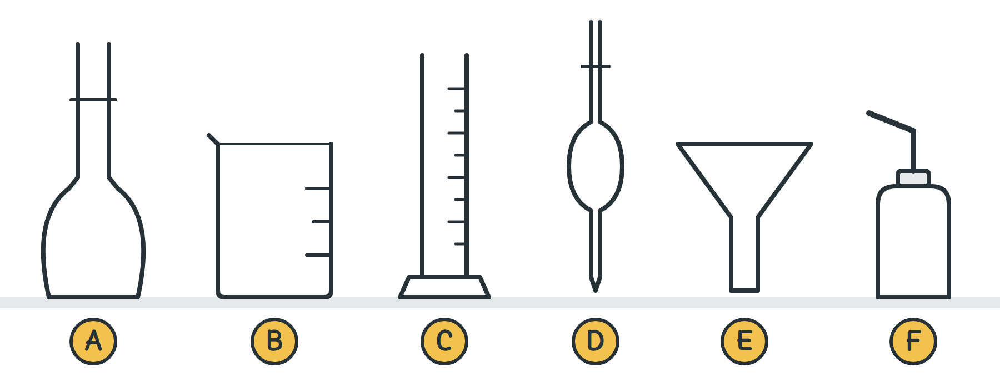
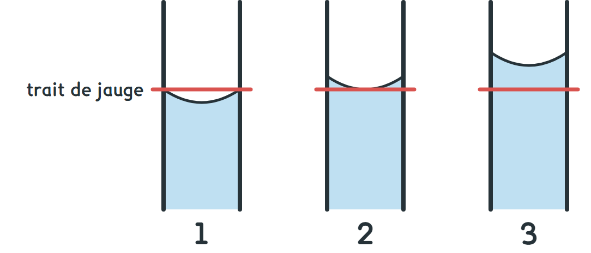
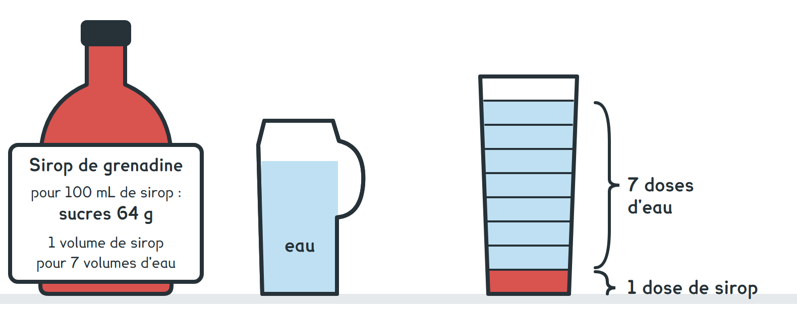

Pour un volume exact, une fiole jaugée et son trait. Pour la masse à peser, la concentration multipliée par le volume. Et quand on ajoute de l'eau, le sucre ne bouge pas, il se partage.
AA Algèbre et analyseCN Calculs numériquesAU Automatismes
La question
La citronnade est-elle trop sucrée ? En séance 1, elle est à 120 g/L, plus sucrée que le soda. Aujourd’hui, au bar à sirops, on prépare un sirop, puis on le coupe d’eau.
La verrerie

Six objets repérés de A à F : une fiole jaugée, un bécher, une éprouvette graduée, une pipette jaugée, un entonnoir, une pissette.
Jaugée veut dire un seul trait, pour un volume exact. Graduée veut dire plusieurs traits, et on lit le volume. Le bécher ne donne qu’un ordre de grandeur.
Série · AU
Le nom de chaque objet
A
B
C
D
E
F
Les noms : bécher, fiole jaugée, éprouvette graduée, pipette jaugée, entonnoir, pissette. Une fiole a un gros ventre et un col long ; une pipette est un tube fin.

Trois cols de fiole vus de près, numérotés 1, 2 et 3 : le liquide autour du trait de jauge.
Le trait de jauge. Le liquide fait une surface courbée, le ménisque. C’est le bas du ménisque qui se pose sur le trait, l’œil à la hauteur du trait.
La fiole remplie juste au trait est la : 1 | 2 | 3
Pour préparer exactement 100 mL de sirop, on prend : le bécher | la fiole jaugée
Pour prélever exactement 10 mL, on prend : la pipette jaugée | l’éprouvette graduée
Le bar à sirops, sur la tablette

La bouteille de sirop de grenadine, son étiquette (64 g de sucres pour 100 mL, 1 volume de sirop pour 7 volumes d’eau), la carafe d’eau, et un verre en doses.
Le parcours « Le bar à sirops », niveau CAP : on lit l’étiquette, on nomme la verrerie, on prépare un sirop de canne par dissolution, puis on contrôle un verre servi.
masse à peser = concentration × volume
la concentrationvoulue — en g/L
le volumede solution — en litres
la massede soluté à peser — en grammes
100 mL de sirop à 250 g/L : 250 × 0,1 = 25 g de sucre.
Verser 100 mL d’eau sur le sucre. Le sucre prend de la place : le sirop dépasse alors 100 mL et il est moins concentré. C’est la solution qui fait 100 mL, et la fiole jaugée s’arrête au trait.
Diluer
Dans le verre, 1 dose de sirop + 7 doses d’eau font 8 doses. Le sucre de la dose de sirop ne change pas : il se partage dans les huit. La concentration est donc divisée par 8.
Exercice · AA
Le verre à la recette
Le sirop de grenadine est à 640 g/L. On sert 1 dose de sirop pour 7 doses d’eau. Quelle est la concentration du verre ?
Compter toutes les doses du verre, sirop compris. La concentration du sirop se divise par ce nombre.
Je m’entraîne
Série · AA
Série 1 — la masse à peser
2 L à 50 g/L
0,5 L à 80 g/L
0,25 L à 200 g/L
100 mL à 120 g/L
500 mL à 40 g/L
La concentration multipliée par le volume en litres. 100 mL = 0,1 L et 500 mL = 0,5 L.
Série · AA
Série 2 — une dose de sirop, combien d’eau ?
sirop à 640 g/L, 1 dose pour 1 dose d’eau
sirop à 640 g/L, 1 dose pour 3 doses d’eau
sirop à 640 g/L, 1 dose pour 7 doses d’eau
sirop à 700 g/L, 1 dose pour 6 doses d’eau
sirop à 500 g/L, 1 dose pour 9 doses d’eau
On compte toutes les doses, celle de sirop comprise : 1 pour 3, c’est 4 doses. Puis on divise la concentration du sirop par ce nombre.
Pour ceux qui ont fini
Exercice · AA
La fête
Il faut 1,5 L de boisson à 80 g/L. Combien de grammes de sucre faut-il dans ces 1,5 L ?
La concentration multipliée par le volume en litres.
Exercice · AA
Le volume de sirop
Ces 120 g de sucre viennent du sirop de grenadine, à 640 g/L. Quel volume de sirop faut-il ? Arrondir au centième de litre.
Chaque litre de sirop apporte 640 g de sucre. Combien de fois 640 g dans 120 g ? On divise.
Exercice · AA
Le bécher de Yanis
Pour 100 mL de sirop à 250 g/L, Yanis met 25 g de sucre dans un bécher, puis verse 100 mL d’eau. Son sirop est-il à 250 g/L ? Répondre en une ou deux phrases.
Le sucre dissous ne disparaît pas : le niveau monte quand on le met dans l’eau. Que vaut alors le volume du sirop ?
J’ai dit que le sirop est moins concentré que 250 g/L
J’ai dit que le sucre prend de la place, et que le sirop dépasse 100 mL
J’ai dit qu’il fallait compléter jusqu’au trait d’une fiole jaugée
Ce qui reste de la séance
Pour préparer une solution, on pèse la concentration fois le volume, et on complète au trait de la fiole. Pour diluer, on ajoute de l’eau : le sucre ne change pas, la concentration baisse.
Ce site rappelle la méthode. Aucun corrigé, rien n'est noté.